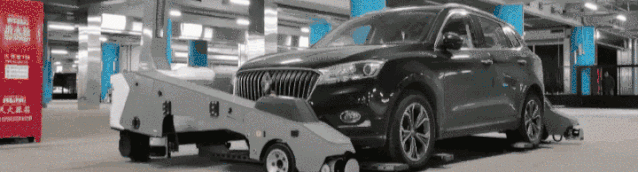
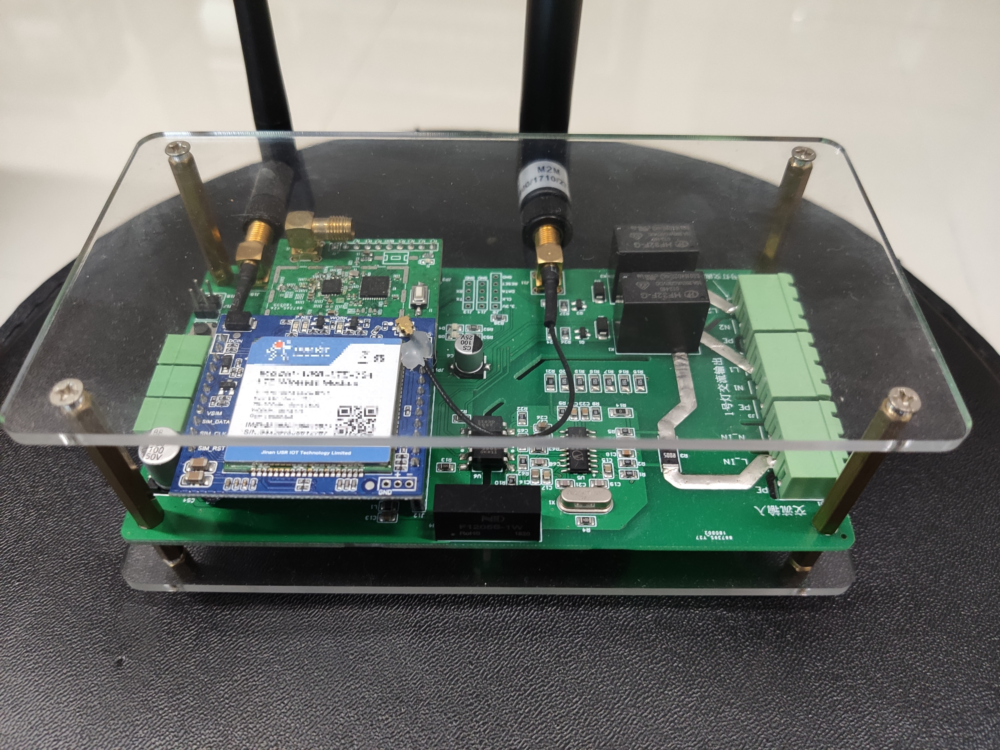
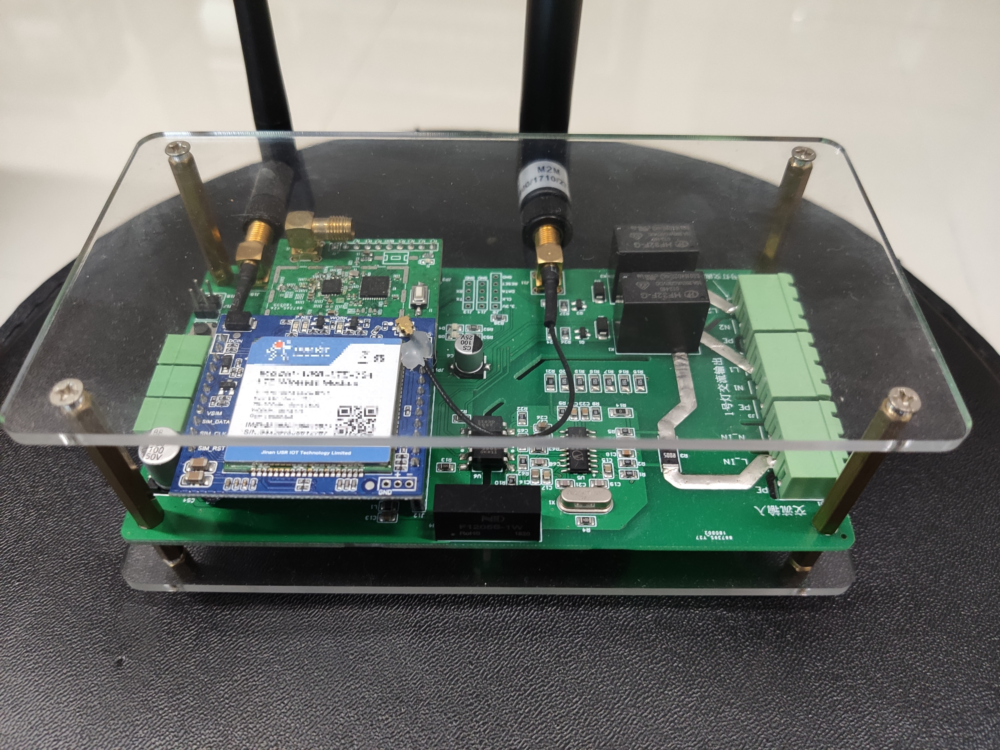

SONG WANG
1 Work Experiences
- Embedded engineer, Zhuhai Ltsmart Technology Co., Ltd, Aug. 2021-present
- Embedded assistant engineer, Zhuhai Ltsmart Technology Co., Ltd, Aug. 2020-Jul. 2021
- Intern, Zhuhai Ltsmart Technology Co., Ltd, May. 2020-Jul. 2020
2 Education
- B. Eng., Measurement Control Technology and Instruments, Beijing Normal University, Zhuhai, Sep. 2016-Jul. 2020
3 Research Interests
Robotics, Multi-robot systems, SLAM, Computer vision
4 Technical Skills
- Programming Languages
- C++, C, Python, C#, etc.
- Programming Technologies
- Qt, Boost, OpenCV
- Design Patterns, Concurrency
- WebSocket, Protobuf, FATFs, LwIP, CanFestival/CANOpen, etc.
- Robotics Technologies
- ROS, Gazebo, RVIZ
- Gmapping, AMCL, EKF, A*, D*
- Eigen, Sophus, Ceres, etc.
- ML/AI
- Pytorch, Numpy, Pandas, Matplotlib, etc.
- Embedded Technologies:
- STM32Fx (Arm-M), 80C51, FPGA, S3C2440 (Arm-A)
- Raspberry Pi, Arduino, etc.
- BUS Technologies:
- TCP/IP, CAN, PCIe, SPI, USART, I2C, etc.
- OS:
- Ubuntu (Driver), ROS, FreeRTOS, CODESYS, etc.
- CAD
- AutoCAD, SolidWorks, etc.
- EDA
- KiCad, PADS, Altium Designer
- Miscellaneous
- SQL, Git, Shell, CMake, Vim, Latex, etc.
5 Language
- Japanese: 日本語能力試験 (JLPT) : N2
- English: TOEIC: 755
6 Qualification Certificate
- Internal Auditor Qualification Certificate (ISO9001:2015 Quality) , Sep. 2019
- National Software/Electronic Industry Talent Certificate (Senior) , Apr. 2018
- National Computer Rank Examination Certificate (C Language) , Mar. 2017
7 Journal Article (Chinese)
- [1]王淞,庄纬豪 (Song Wang, Weihao Zhuang). 基于手势识别控制的机械手的设计与实现 (Manipulator
and Multi-axis Memory Manipulator Based on Gesture Recognition Control)[J]. 工业控制计算机 (Industrial Control Computer),2018,31(02):50-51.
8 Patent (Chinese)
- [1]赵本和,王淞 (Benhe Zhao, Song Wang). 一种屏幕激光加工定位方法及装置 (A Location Method and
Device for Screen Laser Machining)[P]. 广东省 (Guangdong)：CN109759712B,2020-12-08. - [2]曾宪梓,王淞,左景武 (Xianzi Zeng, Song Wang, Jingwu Zuo). 交互型骨灰存放容器 (Interactive Pet Ashes
Storage Container)[P]. 广东省 (Guangdong)：CN210044388U,2020-02-11. - [3]曾宪梓,王淞,左景武 (Xianzi Zeng, Song Wang, Jingwu Zuo). 宠物骨灰容器 (Pet Ashes Storage Container)[P]. 广东省 (Guangdong)：CN305601012S,2020-02-11.
- [4]王淞 (Song Wang). 机械手及基于成像传感器控制的多轴记忆机械手 (Manipulator and Multi-axis Memory Manipulator Based on Gesture Recognition Control)[P]. 河南 (Henan)：CN207841355U,2018-09-11.
Papers and patents verification website.
Project Experiences
1 Zhuhai Ltsmart Technology Co., Ltd (2020-present)
1.1 Company Profile
Zhuhai LTsmart Technology Co., Ltd. (LTSMART) is a technology company focusing on automobile transportation robot system. It is located in Zhuhai Sinomach Robotic Park which lies in Guangdong-Hong Kong-Macau Greater Bay Area. LTSMART's mission is to become a global-leading solution provider of automobile transportation robotic system, by delivering superior customer experience, creating additional value propositions, and achieving resource efficiency upgrades.

1.2 Introduction to robot
1.3 My Works
Fully involved in the development of the LTSMART parking robot and self-researching the development of the parking robot controller. Familiar with the system architecture, communication protocols, and body bus of the robot.
LTSMART Parking Robot is composed of dispatching system, robot system, task management system, etc. It can realize multi-robot collaboration, automatic car pickup, handling, charging, and other functions.
The robot controller is self-developed in software and hardware. It realizes robot functions including positioning, navigation and motion control.
My work includes
- Reflector positioning algorithm
- Responsible for the development of robot reflector positioning algorithm, including reflector map creation, positioning based on the reflector, etc.
- Robot Simulation
- Use Gazebo as a simulation tool to model the parking robot and perform verification of algorithm, motion control, and scheduling closed loop.
- Robot user interface
- Develop the robot controller user interface using Qt. It includes robot parameters configuration, robot status visualization, map display, LIDAR data visualization and other functions.
- Robot system driver (Linux driver)
- Used for the robot system to interact with peripherals.
- Body Buses
- Including CANOpen, TCP/IP, PCIe, etc.
- Other embedded development work
- circuit diagram development, PCB development, embedded program development
1.4 Presentation
1 Reflector-based SLAM
Positioning and map building is one of the core issues to be considered for mobile robots. According to the scenario of parking robot, common positioning methods are analyzed and compared. The final choice is to use reflective pillars as marker points for positioning to meet the map building and positioning needs of open scenes such as parking lots and cargo terminals.
The robot scans the surrounding reflective pillars by LIDAR and builds a reflective pillar map. When the map is built, the robot can compare the current reflective pillars and perform quick positioning based on the saved map.
2. Robot Simulation System
In order to speed up the development and debugging of algorithms related to positioning and motion control, and to reduce the safety risks associated with the debugging of real robots. The robot simulation environment is built using Gazebo for algorithm testing of positioning and motion control, and system interfacing.
The following video shows the use of the robot control user interface to control the simulated robot, RVIZ for robot position and LIDAR visualization.
The following video shows the control of the simulated robot using the robot control user interface, and the information from the scheduling system server is synchronized. Also, the scheduling system can control the simulation robot remotely.
3. Robot controller
Here we have developed our own robot controller for the control of robots.

The robot controller was developed by me and a hardware engineer. The hardware engineer was responsible for the controller hardware development and I was responsible for the embedded software development.
My work includes.
- Controller system porting, including Ubuntu, CODESYS, ROS
- Controller bus driver development, including CANOpen, PCIe
- Controller user interface for robot control, map display, parameter configuration, status display, etc.
4. Scanner column controller
The scanner column controller is used to control the scanner column of the transfer station and the LIDAR at the front end of the robot. Its main function is the motion control of the LIDAR mechanism and the transmission of sensor data.
When the car is parked at the transfer station, the scanner column scans the car body to obtain 3D information. In addition, the robot needs to scan and position the car before inserting and picking up the vehicle.
The scanner column controller was developed by me and another embedded engineer.
My work includes.
- Controller circuit design
- Controller PCB design
- Controller embedded software development
- Controller software and hardware test
5. Fork Test Tool
The Fork Test Tool is a tool designed to test the durability and robustness of custom fork mechanisms.
The fork controller is designed to control the fork and perform up to 50,000 fork pickups while visualizing and checking motor current and torque data in real-time. In turn, the stability of the fork mechanism, motor, and motor drive is verified.
The tool was developed by me and a mechanical engineer. The mechanism part was designed by the mechanical engineer. I was responsible for the embedded, electrical part.
My work includes.
- Electrical design
- Controller design
- Control program design
6. Communication adapters
The communication method and communication protocol of the purchased battery and the robot are different. We designed a communication adapter for adaptation.
Here, we designed a communication adapter to convert the battery's CAN protocol to TCP/IP, which the robot can resolve.
2 Beijing Normal University, Zhuhai (2016-2020)
2.1 Presentation
1. Intelligent street light monitoring system
 

With the increasing demand for urban lighting, energy consumption and hardware maintenance costs are a concern. To try to solve these problems, this work designs street light control systems to transform traditional street lights into smart street lights.
By adding a self-designed controller module to the traditional streetlights, each streetlight becomes the terminal of the IoT system. Users can control each street light through the webpage and monitor the real-time status of the street light, such as supply voltage, current, power consumption, sensor data, etc.
In addition, different control strategies are designed in the street light control system according to the usage scenarios to save electricity on the basis of meeting the light demand. At the same time, the controller has a self-test function, which can report errors and warnings to the administrator in a timely manner and facilitate maintenance.
My work includes.
- Controller circuit design
- Controller embedded software design
- Design of lighting control strategy
2. Robot arm

A multi-axis manipulator based on gesture control was designed and implemented for the complex operation steps of traditional manipulators.
The manipulator was fabricated by 3D printing technology. The motion parameters of the wrist and knuckles are picked up by the visual sensor (leap motion) to detect the change in spatial orientation of the operator's arm and converted into servo commands to control the manipulator's movement. A memory function is added to save the manipulator's operation path, which can be used in assembly lines and other applications that require rapid repetition. The gesture-based control method is easy to operate, reducing the time and operating costs of motion changes and contributing to productivity improvements.
My work includes
- Mechanism design
- Embedded software
- Robotic arm motion model
3. Interactive Pet Ashes Storage Container
People usually have a deep affection for their pets. When a pet dies, it still has a strong bond to the deceased. This work combines an urn and a lamp to keep the pet company in another form. It gives comfort to the soul.
The value of this work is reflected in industrial design and psychology. Through the interaction between the user and the light, it achieves the effect of soothing the sorrowful heart when the pet dies. It makes the user feel that "It is still there".
In this work, I provided the implementation of the control aspect as a collaborator.